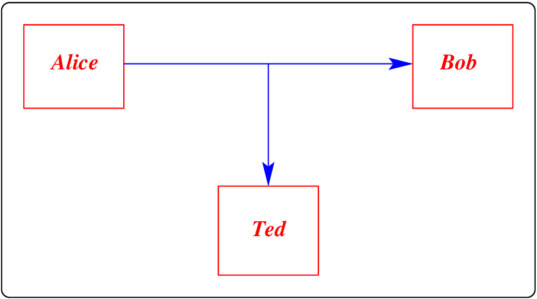

DADA2026:1
Defence against the Dark Arts
First topic - Introduction to IT security [H1]
Outline
- Coordinates, officialdom, assessment
- Information warfare in the news...
- Context for security studies
- Terms for security studies
Administrivia
Outline
- Coordinates, officialdom, assessment
- Information warfare in the news...
- Context for security studies
- Terms for security studies
Your teaching staff
 |  | Lecturer Hugh Anderson COM2: #02-34 |  | Teaching Assistant Chua Yao Xuan |
Please call me Hugh. My current email is hugh@nus.edu.sg. Other contact details will be given in July.
Yao Xuan just finished her BComp in Computer Science at NUS and will be starting her MSc in Computing (Security and Reliability) at Imperial College London later this year. While her schedule may vary, she is typically more active in the afternoons and evenings. Feel free to call her Yao Xuan!
The Project... [ctrl-i2,i3,1,2]


You will find the project specifications in Canvas well before 1 July, and examples of similar projects at [ctrl-i2] above.
The projects will each take the form of a video, a supporting poster, and a paper. The projects are underspecified, and you should talk to Jiamin and me.
Setting the stage...
Outline
- Coordinates, officialdom, assessment
- Information warfare in the news...
- Context for security studies
- Terms for security studies
DBS/POSB attacks in Singapore 12 years ago
 |  |
People discovered that they were having money withdrawn from their bank accounts. In Singapore, there are a LARGE number of cameras, and the culprits were soon tracked down.
The criminals added hardware to ATM machines to read the cards, and watch for the pin-key.
Small scale warfare: ATM attacks [3,4,5,6]
 |  |  |
 |  |  |
The card skimmers would read the magnetic strip on the card, and a small camera was used to watch the keypad. On other ATM skimmers, a keypad overlay is used to copy the keypresses.
Large scale warfare: theft [ctrl-i9]

The well-coordinated multi-country attack did succeed in stealing over US$80M. The suspected attackers have never been bought to justice, and the money was lost.
Consequences: Waikato District Health Board: #2 (2021)

Someone on staff at the DHB clicked on an email link, and answered a few questions. A few days later, many patient records and schedules were encrypted.
DHB network down for months, records lost, patient operations cancelled etc. At one time the chief officer claimed that no machines were damaged, choosing to ignore the social and health damage!
Consequences: Work and Income NZ (WINZ)
Work and Income NZ provide public access terminals in all of their offices in towns/cities around NZ. The public can use these terminals for various uses, including to look for, and apply for jobs.
Keith Ng blogged that you could go into any WINZ office and use them to access the WINZ, and Ministry for Social Development corporate networks.
- Keith was a citizen reporter, not a hacker, but said that they had some basic features disabled - you couldn’t just open up File Manager...
- However, by using “Open File” in Microsoft Office, you could map any unsecured computer at WINZ, and then open up accessible files.
He carried on to expose a wide range of information that appeared to be easily accessable.

Keith became a real journalist! WINZ officers were promoted!
Consequences: 1MW Diesel generator blown up [7]

In 2000 I worked at the University of the South Pacific in Suva, Fiji during a coup, and some villagers sabotaged the Monasavu dam, cutting power to the entire country. For over three months we lived without power, although the electricity department did manage to get some small generators going to provide 20 minutes of electricity to Suva every day. No phones, no shops open, no lights, eventually no water, no news, no Internet.
Outline
- Coordinates, officialdom, assessment
- Information warfare in the news...
- Context for security studies
- Terms for security studies
Complexity of issues: Military security

- Electronic warfare and defence - jamming of radar, so opponent cannot see your planes; jamming trigger systems for IEDs.
- Military communications - not just encryption, but also hiding the source (the location of a transmitter can be attacked, so the military use LPI - low probability of intercept - radio links).
- Military logistics - who can mobilize 10,000 people and 30,000 meals in a day? Management systems for the military have different requirements from commercial systems - basic rule is that restricted information cannot flow to an unrestricted area.
- Weapons control (eg nuclear weapons) need much higher levels of assurance than (say) commercial areas.
Using the framework: Airport security

There was actually not any failure of the security mechanisms in place at the time: knives with blades less than 3 inches were OK in 2001. It was a failure of policy, not mechanism.
Since 9/11? There are still poor policy choices:
- passenger screening is aggressive and costly, (approx $15 billion), whereas strongly reinforced cockpit doors could remove most risk (est $100 million).
- Ground staff are seldom screened, planes do not have locks.
Why are such poor policy choices made? Because the incentives for policy makers favour visible controls over effective ones.
Assurance? System screening picks up less than half the weapons.
Outline
- Coordinates, officialdom, assessment
- Information warfare in the news...
- Context for security studies
- Terms for security studies
Types of attacks
 |  |
 |  |
The diagrams above, of Interception, Modification, Interruption, and Fabrication, remind us of the routes taken.
Types of attacks

Let us not forget human factors and social engineering.
Summary: the IT security landscape
 |
(Frameworks to help)
Unfortunately, the landscape is that of "Information warfare", but the good news is that there are a wide range of activities (and hence jobs): Information Security Engineer, IT Security Architect, IT Security Specialist, IT Security Analyst, Business Security Manager, Security Research (Technical)...
This session emphasized the scale of the issue, with hints as to how we can begin to address it.